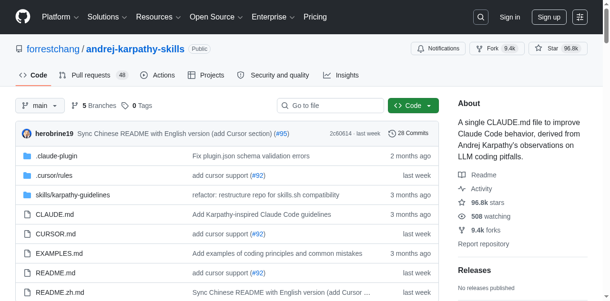
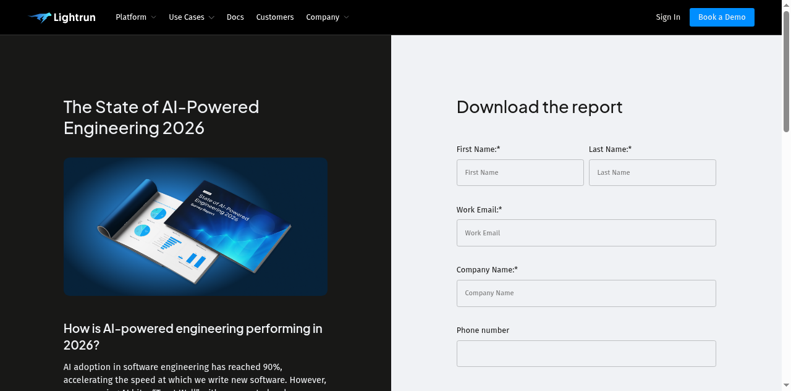

Executive Summary
Andrej Karpathy가 2026년 1월 공개한 LLM 코딩 에이전트의 4대 구조적 실패 패턴(가정 미확인, 과복잡화, 직교적 수정, 미검증 실행)은 코드 품질의 문제에 그치지 않는다. Lightrun 2026에 따르면 AI 생성 코드의 43%가 프로덕션에서 디버깅이 필요하고, Cortex는 에이전트 도입 후 인시던트/PR이 23.5% 증가했다고 보고했다. 이 결함들이 데이터 파이프라인을 관통하면 스키마 드리프트, 사일런트 필터 변경, 유령 성공(Phantom Success)으로 변환되어 학습 데이터 자체를 오염시킨다.
Forrest Chang이 Karpathy의 관찰을 70줄짜리 CLAUDE.md 파일로 체계화한 andrej-karpathy-skills 저장소는 95.9k 스타를 돌파하며 "코드 게이트"의 필요성을 입증했다. 그러나 코드가 생성한 데이터 자체를 검증하는 "데이터 게이트"는 여전히 공백이다.
이 보고서는 에이전트 코드 실패가 데이터 파이프라인을 어떻게 오염시키는지를 추적하고, CLAUDE.md(코드 게이트) + DataClinic(데이터 게이트)의 2중 방어 아키텍처가 왜 AI-Ready Data의 확장된 정의를 구성하는지 논증한다. ETH Zurich 연구에서 컨텍스트 파일의 효과가 +4%에 불과하다는 결과도 함께 다룬다.
Karpathy의 경고 — 4대 구조적 실패
2025년 12월부터 코딩 작업의 80%를 에이전트에게 위임해온 Karpathy는 2026년 1월, X(구 Twitter)에서 직접 체험한 4가지 구조적 함정을 공개했다. 단순한 불편 사항이 아니다. arXiv 2512.07497(Roig)의 900개 에이전트 실행 트레이스 분석과 arXiv 2511.04355(Sharifloo)의 6개 LLM, 114개 일관 실패 태스크 연구가 동일한 패턴을 학술적으로 확인했다. Stack Overflow 2025 설문에서 개발자의 84%가 AI 도구를 사용하지만, 신뢰도는 40%에서 29%로 하락했다.
"The models make wrong assumptions on your behalf and just run along with them without checking."
— Andrej Karpathy, 2026-01-26
Karpathy의 네 가지 경고는 각각 데이터 파이프라인에서 구체적인 오염 경로로 변환된다. 아래 표는 Karpathy의 관찰, Roig의 학술 분류, 코드 결함, 데이터 오염 결과를 1:1로 매핑한 것이다.
| Karpathy 함정 | 학술 원형 (Roig) | 코드 결함 | 데이터 오염 |
|---|---|---|---|
| 가정 미확인 | Silent Wrong Assumptions | NULL 처리 오류, 타입 손실 | 스키마 드리프트, 분포 왜곡 |
| 과복잡화 | Over-complication | 메모리 과다, OOM | 배치 데이터 누락 |
| 직교적 수정 | Orthogonal Damage | 부작용 필터 변경 | 사일런트 클래스 드랍 |
| 미검증 실행 | Goal Misalignment | 빈 결과 전파 | Phantom Success |
"They really like to overcomplicate code and APIs, bloat abstractions, and implement a bloated construction over 1000 lines when 100 would do."
— Andrej Karpathy, 2026-01-26

Karpathy 자신도 인정했듯, 에이전트는 "100줄이면 충분한 작업에 1,000줄짜리 추상화를 세운다." 이 과복잡화 패턴은 단순히 코드가 지저분해지는 문제가 아니다. 파이프라인 코드에 불필요한 추상 계층이 쌓이면 메모리 사용량이 급증하고, 배치잡 OOM으로 데이터가 누락된다. arXiv 2512.07497은 이를 두고 "모델 규모만으로는 에이전틱 견고성을 예측할 수 없다"고 결론지었다.
가장 위험한 것은 "직교적 수정"이다. Karpathy의 표현을 빌리면, 에이전트는 "충분히 이해하지 못한 코멘트와 코드를 부작용으로 변경하거나 삭제한다." 데이터 파이프라인에서 이 부작용이 필터 조건을 조용히 바꾸면, 특정 클래스의 데이터가 통째로 사라지는 사일런트 클래스 드랍이 발생한다. 로그에는 에러가 남지 않는다.
CLAUDE.md 한 장의 힘 — 95.9k Stars 해부
Forrest Chang은 Karpathy의 관찰을 하나의 마크다운 파일로 압축했다. andrej-karpathy-skills 저장소는 20KB 단일 파일로 구성되며, 2026년 1월 27일 생성 이후 4월 13일에 일일 최고 5,828 스타(글로벌 2위)를 기록했다. 4월 28일 현재 95.9k 스타, 9.3k 포크를 달성해 GitHub 역사상 가장 빠르게 성장한 단일 파일 저장소 중 하나가 되었다.
이 파일이 체계화한 4가지 핵심 원칙은 다음과 같다.
- 1. Think Before Coding — 코드를 쓰기 전에 가정을 확인하고 계획을 세운다
- 2. Simplicity First — 100줄로 충분한 일에 1,000줄을 쓰지 않는다
- 3. Surgical Changes — 관련 없는 코드를 건드리지 않는다
- 4. Goal-Driven Execution — 결과를 검증하고 확인한 뒤 완료한다
이것은 단순한 프롬프트 엔지니어링이 아니다. arXiv 2505.14810에 따르면 150개 이상의 지시에서 성능 하락이 시작된다. 일회성 프롬프트는 컨텍스트 윈도우가 초기화되면 사라지지만, CLAUDE.md는 프로젝트 루트에 상주하며 모든 세션에서 자동으로 로드된다. arXiv 2406.12513은 이러한 In-Context Learning(ICL) 패턴이 보안 개선에도 효과적임을 확인했다. 4~5개 핵심 규칙으로의 압축은 과학적 근거가 있는 선택이다.
CLAUDE.md는 Anthropic Claude Code 전용이지만, 이 접근법은 이미 생태계 전체로 확산되고 있다. Linux Foundation 관할의 AGENTS.md는 60,000개 이상의 프로젝트에서 채택되었으며, Cursor의 .cursor/rules, Windsurf의 .windsurfrules 등 각 플랫폼이 유사한 행동 교정 파일을 지원한다.
| 파일 | 플랫폼 | 관할 | 특징 |
|---|---|---|---|
| CLAUDE.md | Claude Code | Anthropic | @imports, Skills Marketplace(658+) |
| AGENTS.md | 범용(14+ 플랫폼) | Linux Foundation | 사실상 표준, 60,000+ 프로젝트 |
| .cursor/rules | Cursor | Anysphere | 로컬 룰 파일, IDE 통합 |

arXiv 2511.10271은 "프롬프트 기반 비기능 품질 최적화의 불안정성"을 지적하며, 일회성 프롬프트가 아닌 지속적 행동 교정의 필요성을 논증했다. CLAUDE.md는 바로 이 지속적 컨텍스트의 가장 단순한 구현이며, "컨텍스트 엔지니어링"이라는 새로운 패러다임의 출발점이다.
데이터팀의 진짜 위험 — 코드 실패에서 파이프라인 오염으로
코드 실패는 끝이 아니라 시작이다. 에이전트가 작성한 결함 있는 코드가 프로덕션에 투입되면, 데이터 파이프라인의 전 단계에 걸쳐 오염이 전파된다. 그리고 AI 지원 엔지니어는 기존보다 코드를 60% 더 많이 프로덕션에 출하한다. 코드 결함의 확률이 높아지고, 출하 속도까지 빨라진 셈이다.
현재까지 축적된 수치를 종합하면, 에이전트 코딩의 품질 위험은 결코 가설이 아니다.
43%
프로덕션 디버깅 필요
Lightrun 2026
+23.5%
인시던트/PR 증가
Cortex 2026
1.7x
AI 코드 이슈율
CodeRabbit 2025
45%
보안 테스트 실패
Veracode 2025

Lightrun 2026(200명 SRE/DevOps 대상)에 따르면 AI 생성 코드의 43%가 프로덕션에서 디버깅을 필요로 하며, 88%가 수정 1건에 2~3회 재배포한다. Cortex 2026은 에이전트 도입 후 change failure rate가 30% 증가했음을 보고했다. CodeRabbit은 470개 PR 분석에서 AI 코드의 이슈율이 인간 대비 1.7배, 보안 취약점은 2.74배라고 밝혔다.
여기서 데이터팀이 놓치기 쉬운 지점이 있다. 위 수치들은 코드 결함 자체의 통계이지, 그 결함이 데이터를 어떻게 망가뜨리는지는 측정하지 않는다. 코드 결함이 파이프라인을 통과해 데이터에 착지하는 순간, 문제는 조용해진다. 로그에는 에러가 없고, 테스트도 통과하며, 파이프라인은 정상으로 보인다.
이 수치들을 데이터 파이프라인의 맥락에 놓으면, 의미가 달라진다. "가정 미확인"으로 타입이 손실되면 임베딩 분포가 왜곡되고, "직교적 수정"으로 특정 클래스가 누락되면 모델 결정 경계가 편향된다. Nature 2024(Shumailov)의 Model Collapse 연구는 이러한 오염이 반복 학습을 통해 "비가역적 결함, 즉 원본 분포의 tail이 영구 소실"된다고 증명했다.
이 오염이 학습 데이터에 도달했을 때, 어떻게 탐지할 수 있는가? 코드 리뷰는 코드를 본다. 하지만 코드가 만들어낸 데이터의 품질은 누가 보는가? DataClinic의 Level 2 밀도 분석과 아웃라이어 탐지는 이 유형의 분포 왜곡을 포착할 수 있는 도구다. 에이전트가 부작용으로 필터 조건을 바꿔 특정 클래스 데이터가 사라졌다면, DataClinic의 클래스별 분포 진단이 그 증상을 식별할 수 있다.
Gartner는 불량 데이터로 인한 기업 평균 연간 비용을 $12.9~15M으로 추정하며, 2026년까지 AI 프로젝트의 60%가 AI-ready data 부재로 포기될 것으로 예측했다. arXiv 2511.10271은 "생성된 코드가 기술 부채의 축적을 가속화할 수 있다"고 경고한다.
2중 방어 아키텍처 — CLAUDE.md + DataClinic
CLAUDE.md는 에이전트가 코드를 작성하는 시점에서 행동을 교정하는 1차 방어선(코드 게이트)이다. 그러나 ETH Zurich(arXiv 2602.11988)의 실험 결과, 인간이 작성한 컨텍스트 파일의 효과는 벤치마크 태스크 해결률 기준 +4%에 불과했고, LLM이 자동 생성한 컨텍스트 파일은 오히려 -3%의 역효과를 보였다. 코드 게이트만으로는 충분하지 않다.
코드 게이트를 통과한 결함이 데이터를 오염시킨 후에는, 데이터 수준의 2차 방어선(데이터 게이트)이 필요하다. DataClinic은 이 역할을 수행할 수 있는 사후 진단 엔진이다.
2중 방어 플로우
코드 게이트
데이터 게이트

구체적으로, Karpathy의 4대 함정은 DataClinic의 진단 영역과 다음과 같이 대응된다. "가정 미확인"으로 인한 분포 왜곡은 DataClinic Level 1(기본 통계)에서 탐지 가능하다. "직교적 수정"으로 인한 클래스 드랍은 Level 2(DataLens 신경망)에서 밀도 이상으로 식별할 수 있다. "과복잡화"가 유발한 OOM으로 배치잡이 실패하면 클래스별 샘플 수 불균형으로 나타나며, 이 역시 DataClinic의 진단 범위에 포함된다.
Cortex 2026에 따르면 에이전트 코딩에 대한 공식 거버넌스 정책을 수립한 기업은 32%에 불과하고, 27%는 아무런 정책도 없다. Gartner는 96%의 기업이 1년 내 data observability 도입을 계획하고 있다고 보고했다. 코드 게이트(행동 교정 파일)와 데이터 게이트(사후 진단)를 결합하는 것은 이 두 흐름의 자연스러운 수렴점이다.
Google은 Agent Identity/Gateway/Anomaly Detection을, Amazon은 Bedrock AgentCore를, Microsoft는 Enterprise Code of Conduct를 플랫폼 수준에서 구축하고 있다. 그러나 "에이전트 코드가 데이터를 어떻게 망가뜨렸는가"를 진단하는 데이터 수준 도구는 아직 어디에서도 제공하지 않는다. 이것이 2중 방어 아키텍처의 두 번째 벽, 즉 데이터 게이트가 필요한 이유다.
한계와 남은 질문
이 보고서에서 제시한 인과 체인은 논리적 추론에 기반하며, CLAUDE.md 도입이 데이터 파이프라인 품질에 미치는 직접적 영향을 측정한 실증 연구는 아직 존재하지 않는다. 솔직하게 한계를 짚어야 한다.
첫째, ETH Zurich 연구의 +4%라는 수치는 컨텍스트 파일의 효과가 미미할 수 있음을 시사한다. 실무에서 CLAUDE.md의 가치는 벤치마크 점수가 아닌 코드 복잡도 감소, 사이드 이펙트 방지, 일관된 규칙 적용 등 비기능 품질 영역에 있다. 하지만 이를 정량화한 데이터는 아직 축적 중이다. Veracode 2025는 "모델이 기능적 코드를 더 잘 쓰게 되었지만, 보안 코드를 더 잘 쓰게 된 것은 아니다"라고 지적한다.
둘째, 행동 교정 파일의 확장에는 물리적 한계가 있다. arXiv 2505.14810에 따르면 150개 이상의 지시에서 instruction-following 품질이 일관되게 하락한다. 현장에서 67%가 여러 파일에 걸쳐 중복 설정을 유지하고 있어, 규칙 관리 자체가 새로운 기술 부채가 되는 역설이 발생하고 있다.
셋째, SWE-bench+에서 데이터 누출을 제거하자 해결률이 3.97%에서 0.55%로 7배 이상 떨어졌다는 결과는, 에이전트 코딩 능력 자체가 벤치마크에서 과대평가되고 있을 가능성을 제기한다. 88%의 AI 에이전트 프로젝트가 프로덕션에 도달하기 전 실패한다는 보고도 같은 맥락이다.
남은 질문들은 앞으로의 연구와 실무가 답해야 할 과제다. CLAUDE.md 규칙 수의 최적점은 4개인가, 50개인가? 코드 게이트와 데이터 게이트 사이의 피드백 루프는 어떻게 구현해야 하는가? Physical AI(자율주행, 로봇) 파이프라인에서 에이전트 코드 오류의 안전 임계값은 얼마인가? 빅테크의 플랫폼 수준 거버넌스가 마크다운 파일 기반 접근을 대체할 것인가?
페블러스가 이 주제에 주목하는 이유
이 보고서의 인과 체인 — 에이전트 코드 실패에서 데이터 오염으로, 다시 모델 성능 저하로 — 은 페블러스의 핵심 사업 영역과 직접 맞닿아 있다. DataClinic은 데이터의 분포 왜곡, 클래스 불균형, 아웃라이어를 진단하는 엔진이며, 이 진단 항목들은 Karpathy가 지적한 4대 함정이 데이터 계층에 남기는 증상과 정확히 대응된다. "가정 미확인"이 타입 손실로 임베딩 분포를 왜곡시키면 DataClinic Level 1이 탐지하고, "직교적 수정"이 특정 클래스를 조용히 제거하면 Level 2 DataLens가 밀도 이상으로 식별할 수 있다.
데이터 품질의 관점에서, Nature 2024(Shumailov)가 증명한 Model Collapse 메커니즘은 이 문제의 심각성을 한 차원 높인다. AI 에이전트가 생성한 결함 있는 코드가 데이터를 변환하고, 그 데이터가 다시 모델 학습에 사용되면 원본 분포의 tail이 영구적으로 소실된다. 코드 교정(사전)과 데이터 진단(사후)의 피드백 루프가 model collapse 방지의 실질적 경로라면, DataClinic은 이 루프의 후반부를 담당하는 위치에 있다.
기업 실무의 측면에서, AI 지원 엔지니어가 코드를 60% 더 많이 프로덕션에 투입하면서 디버깅 비율은 43%에 달하는 현실은 데이터 파이프라인의 오염 표면적을 급격히 확대하고 있다. 데이터팀 리드와 CDO는 에이전트 코딩 도입 시 행동 교정 파일을 코드 수준 정책으로 수립하는 것에 더해, DataClinic과 같은 데이터 수준 사후 진단을 병행하는 것을 고려할 수 있다.
경쟁 콘텐츠 분석에서 확인된 것처럼, "CLAUDE.md 사용법"(개발자 관점)과 "데이터 품질 도구 비교"(데이터 관점)는 각각 존재하지만, 이 두 세계를 인과적으로 연결한 분석은 거의 없다. 앞으로 탐구해야 할 질문은 명확하다. DataGreenhouse의 Observation Layer가 에이전트 코드 변경 후 데이터 품질 신호를 자동 수집하고, Action Layer가 오염된 데이터를 교정하는 루프를 어떻게 구현할 수 있는가? AI-Ready Data의 정의를 데이터 수집과 정제를 넘어 "파이프라인 코드 품질"까지 확장할 때, 그 기준과 측정 방법은 무엇인가?
참고문헌
학술 논문
- Kharma et al. (2025). "Security and Quality in LLM-Generated Code." arXiv: 2502.01853
- Sun et al. (2025). "Quality Assurance of LLM-generated Code." arXiv: 2511.10271
- Sharifloo et al. (2025). "Where Do LLMs Still Struggle?" arXiv: 2511.04355
- Mohsin et al. (2024). "Can We Trust LLM Generated Code?" arXiv: 2406.12513
- Jimenez et al. (2024). "SWE-bench." ICLR 2024. arXiv: 2310.06770
- "SWE-Bench+." (2024). arXiv: 2410.06992
- Shumailov et al. (2024). "The Curse of Recursion." Nature 2024. arXiv: 2305.17493
- Roig (2025). "How Do LLMs Fail In Agentic Scenarios?" arXiv: 2512.07497
- Vasilopoulos (2026). "Codified Context." arXiv: 2602.20478
- Schreiber & Tippe (2025). "Security Vulnerabilities in AI-Generated Code." arXiv: 2510.26103
- "Scaling Reasoning, Losing Control." (2025). arXiv: 2505.14810
- Gloaguen et al. (2026). "Evaluating AGENTS.md." ETH Zurich. arXiv: 2602.11988
업계 보고서
- Lightrun. (2026). State of AI-Powered Engineering Report
- CodeRabbit. (2025). State of AI vs Human Code Generation Report
- Veracode. (2025). GenAI Code Security Report
- Cortex. (2026). Engineering Benchmark Report
- Stack Overflow. (2025). Developer Survey.
1차 출처
- Karpathy, A. X 포스트 (2026-01-26). 원문 링크
- forrestchang/andrej-karpathy-skills. GitHub Repository
- Anthropic. CLAUDE.md 공식 문서.
- Linux Foundation. AGENTS.md 표준.